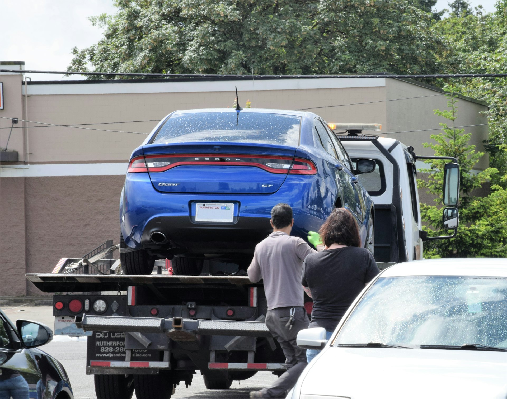

Recebeu uma intimação de busca e apreensão? Calma, posso te ajudar a resolver.
Receber a intimação não é perder o carro. A financeira precisa cumprir a lei, e eu verifico se ela cumpriu.
- Dra. Mariana Salvati · OAB/RS 139.028
- Análise feita diretamente pela advogada
- Atendimento online em todo o Brasil
- Análise da notificação e do contrato
- Defesa em busca e apreensão de veículo
Recebeu uma intimação assim? Fica tranquilo, tem solução.
- A carta da financeira chegou.E você não sabe quanto tempo ainda tem com o carro.
- A cobrança não para.As ligações já falam em "recolher o veículo".
- O carro é o seu sustento.Aplicativo, entregas, caminhão: sem ele, a renda para.
- O guincho já levou.E ninguém explica o que acontece agora.
Em que ponto da estrada você está?
Acompanhe o caminho até a apreensão e veja o que fazer em cada etapa. Toque na sua.
Parcelas em atraso
O atraso, sozinho, não autoriza ninguém a levar o veículo.
O que fazer: Entender o contrato antes de a notificação chegar.
Notificação
A financeira precisa comprovar que você foi notificado.
O que fazer: Verificar se a notificação é válida. É aqui que muitos erros aparecem.
Ação ou cartório
A financeira pede a liminar ao juiz ou abre o procedimento extrajudicial.
O que fazer: Agir antes que a ordem de apreensão seja cumprida.
Apreensão
O guincho recolhe o veículo e o leva a um pátio.
O que fazer: Anotar a data: o prazo de 5 dias começa a contar.
Prazo correndo
Prazos curtos para pagar ou se defender. Depois, leilão.
O que fazer: Falar com a advogada imediatamente.
Depois da apreensão, o relógio corre contra você.
A lei dá 5 dias, contados da execução da liminar, para pagar a integralidade da dívida e ter o veículo de volta. Depois disso, a financeira pode vender o carro, normalmente em leilão.
Decreto-Lei 911/1969, art. 3º
Fale com uma advogada especialista em busca e apreensão de veículoMariana Salvati
O seu caso não passa por atendente nem por robô. Quem lê o contrato, confere a notificação e explica as opções é a própria advogada, do primeiro contato ao fim do processo.
Separe estes documentos e envie pelo WhatsApp.
A análise começa já na primeira conversa.
- Contrato de financiamentoOu a cédula de crédito bancário
- Notificação recebidaCarta, e-mail ou aviso de cartório
- Documentos do processoMandado ou auto de apreensão, se houver
Dúvidas frequentes
Recebi a notificação. Meu carro vai ser levado amanhã?
Não necessariamente. A apreensão depende das etapas seguintes: ação judicial com liminar ou procedimento extrajudicial, quando previsto no contrato. É o momento de verificar se a notificação foi feita corretamente.
Moro fora do Rio Grande do Sul. Posso ser atendido?
Sim. O atendimento é online, com primeiro contato pelo WhatsApp, para todo o Brasil.
A advogada garante que vou ficar com o carro?
Não. Nenhum advogado pode garantir resultado. A análise verifica se a financeira cumpriu os requisitos legais e quais caminhos existem no seu caso.